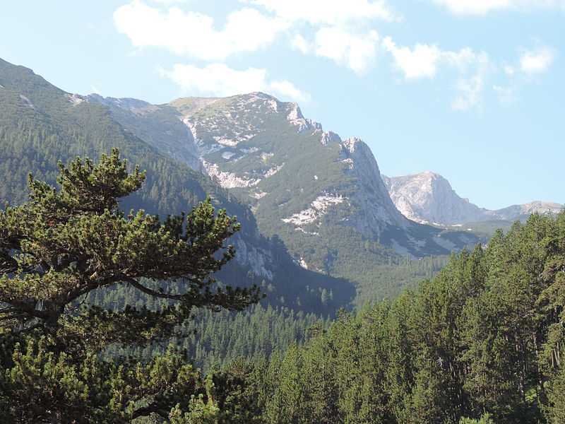
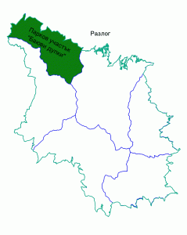
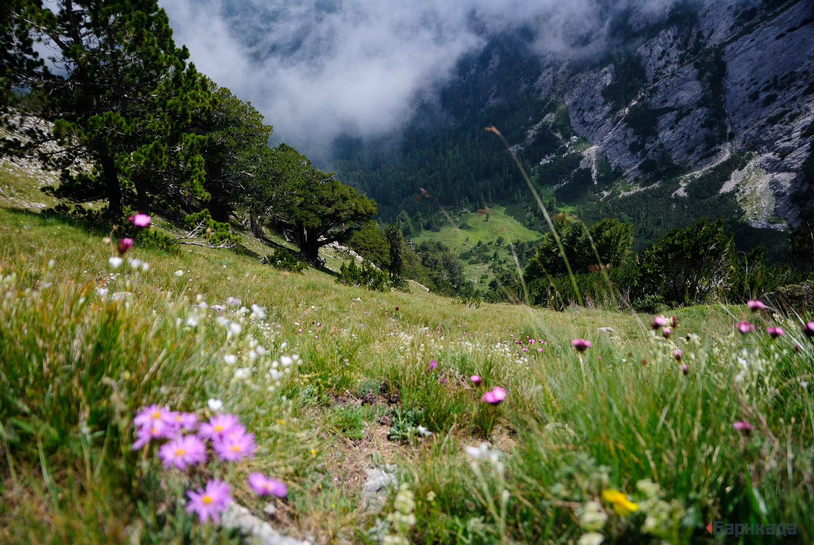
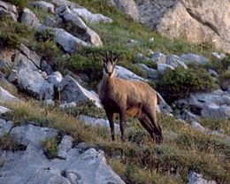

Резерват „Баюви дупки“ – Джинджирица
„Баюви дупки“ – Джинджирица е резерват разположен в северната част на Пирин, в близост до седловината Предел. Намира се в границите на национален парк „Пирин“ и защитената зона от Натура 2000 Пирин по директивите за местообитанията и за птиците.
Местоположение

Резерватът е разположен между селата Кости (община Царево) и Сливарово (община Малко Търново) и се намира в долината на Резовска река, наблизо 20 километра от устието на реката. Релефът е разчленен, като надморската височина варира между 50 и 300 м.
Климатът е континентално-средиземноморски и е по-мек, поради близостта си до бреговете на Черно море. През цялата година средните месечни температури не падат под 0 °C (през януари са 2 – 3 градуса по Целзий). Почвите са канелени и жълтоземни.
През Узунбуджак преминават река Резовска, река Каретарски дол и Лопушница, която се влива в първата.
История
Той е един от най-старите резервати в България, създаден е с цел опазването на двата редки дървесни вида бяла мура и черна мура, както и на разнообразния животински свят на местността.
Териториите на резервата са на надморска височина от 1490 до 2884 m. Границите се простират между скалния ръб Кончето и върховете Баюви дупки и Каменитица. В него се намират върховете Дунино куче, Даутов връх, Плешки връх и Пирин.[2]
Резерватът е създаден през 1934 година с постановление № 1388 на МЗДИ, разширен със заповеди № 300 на МГОПС от 1976 година и № 976 на КОПС от 1980 година с обща площ 2873 ha.
През 1977 година резерватът е включен в листата на биосферните резервати към програмата на ЮНЕСКО – „Човек и биосфера“.
През територията на резервата преминава туристическият маршрут хижа „Предел“ – хижа „Яворов“ – хижа „Вихрен“.
Флора

Естествените насаждения в резервата заемат около 98 % от територията му. Най-голям е делът на площите залесени с бяла мура – 486 ha. Възрастта на дърветата в резервата е между 100 и 250 години, някои от дърветата са на 570-годишна възраст. Около 288 ha от територията на резервата е заета от черна мура. Срещат се ощр черен бор, смърч, бял бор, клек, а в по-ниските части бук и по-рядко обикновен габър. Около 30 % от територията му е незалесена.[2]
На територията на бившия резерват „Баюви дупки“, заемащ площ 1450 ha, са описани 477 вида растения, от които 16 локални и 42 регионални ендемити. Срещат се 46 вида растения, които са включени в Червената книга на България – пиринска ливадина, пиринско зеле, пиринска острица, алпийска мантийка, битинско глухарче, трансливанска камбанка, жълта тинтява, маслиновидно вълче лико, петниста тинтява, еделвайс, ниско вълче лико, златиста кандилка, халерово котенце и други.[2]
Фауна

В резерват Баюви дупки – Джинджирица характерен представител на животинския свят е дивата коза, която е един от символите на резервата. Срещат се още дива свиня, златка, белка, катерица, глухар, лещарка, сокол, ястреб, кълвач, усойница, смок мишкар, живороден гущер, планинска водна жаба. По високите части на резервата се срещат и кафяви мечки.[2]